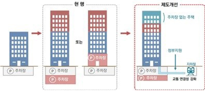
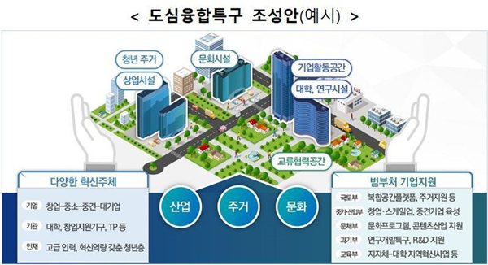
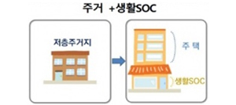

|
|
|
#01 공공주도 3080+ 대도시권 주택공급 확대방안
|
|
안녕하세요! 토지건물 중개 컨설턴트 다이땅입니다. 🖐
오늘은 2월 4일 발표되고 정말 핫했던 정책이죠,
이번 정책의 핵심은 수도권 약 61만호 (서울 약 32만호) + 5대 광역시 등 약 22만호 등 2025년 까지 전국 대도시에 약 83만호 주택 공급 부지를 확보하는 역대 최다 물량 공급입니다.
그럼'공공주도 3080+ 대도시권 주택공급 확대방안'에 대해 자세히 알아보겠습니다.
|
📢 새로운 정책, 그게 뭔데?!
공공주도 3080+ 대도시권 주택공급 확대방안
- 📌대규모 물량 공급으로 수급 불안심리 해소
-
- (물량) 서울 32만호 공급
- (속도) 건설 기간 단축 (정비사업: 평균 13년→ 5년 이내)
- (품질) 특별건축구역 + 민간의 창의적 설계‧시공 + 충분한 생활 SOC
- (가격) 시세보다 저렴한 공공분양을 통한 공급
- (청약) 3040 세대 실수요자를 위한 청약제도
- 📌규제혁신과 개발이익 공유
-
- (도시‧건축규제 완화) 용도지역 변경 + 용적률 상향 + 기부채납 부담 완화
- (재초환 미부과) 공공 시행을 전제로 재건축 초과이익 부담금 미부과
- (인허가 신속 지원) 중앙정부 또는 지자체 지구지정 + 지자체 인허가 통합심의
- (개발이익 공유) 토지주 추가수익, 생활 SOC 확충, 세입자 보호, 공공자가‧임대
- 📌파격적 인센티브와 새로운 비즈니스 기회 창출
-
- (토지주) 10~30%p 추가수익 + 사업기간 단축 + 공공이 리스크 부담
- (민간) 새로운 시장과 비즈니스 기회 창출(민관 공동 시행, 민간 단독 시행 등)
❶ 도심 공공주택 복합사업 + 소규모 재개발 ⇨ 약 30.6만호
도심 공공주택 복합사업은 개발되어야 함에도 방치중인 부지를 정비하는 사업이라고 해요.
예정 지구 지정 1년 안에 토지주 등 2/3이 동의하면 사업이 확정되며 신속 절차를 통해 착공이 진행됩니다.
사업성을 제고해 토지 소유자에게는 기존 사업 방식 대비 높은 수익률 및 아파트, 상가 우선공급을 보장한다고 하네요.
| 도심 공공주택 복합사업 |
부지 |
내용 |
'주거상업고밀지구’
(주거+업무+상업)
|
역세권(5천m²이상) |
최대 700% 용적률 상향, 지하철 연결통로 설치 등 |
|
‘주거산업융합지구’
|
준공업지역(5천m²이상) |
스타트업 육성 공간, 청년기숙사 및 주거단지 등 복합 |
|
‘주택공급활성화지구’ |
낙후된 저층 주거지(1만m²이상) |
건축, 도시 규제 완화, 생활SOC 복합 등 |
❷ 공공 직접시행 정비사업 ⇨ 약 13.6 만호
LH, SH공사 등이 재개발, 재건축을 직접 시행하게 됩니다.
조합원 과반수 요청으로 정비사업이 시작되며 절차 생략, 통합심의를 적용해 기본 13년 이상의
사업 기간을 5년 이내로 대폭 단축시킬 계획이라고 하는군요.
이 사업 역시 사업성을 개선시키기 위해 조합원에게 다양한 혜택이 부여될 전망입니다.
| 현행 정비사업 |
구분 |
공공 직접시행 정비사업 |
| 조합+관리처분 |
사업 방식 |
공기업 단독+현물 선납 |
| 평균 13년 |
사업 소요기간 |
5년 이내 이주 |
| 조합원 기본수익 |
수익 |
기본수익+10~30%p추가수익 |
| 재건축초과이익환수+2년 거주 의무 |
규제 |
둘 다 없음 |
| 추가 용적률의 20~25%(공공재건축) |
기부채납 |
재개발15%, 재건축9% 이내 |
| 정비계획상 용적률 |
도시 건축 규제 |
용적률 법적 상한 120% 상향 |
현행 정비사업과 공공 직접시행 정비사업 비교표
❸ 도시재생(주거재생혁신지구) 사업방식 개선 ⇨ 약 3만호
노후 거주지를 개선하는 ‘도시재생(주거재생혁신기구)’ 사업방식이 시행됩니다.
공공이 쇠퇴지역에 주택정비를 추진하고 지구내 신규주택 공급 활성화, 제한적 수용방식 적용, 입지규제최소구역 의제 및 기반시설, 생활SOC 설치 국비지원 등을 추진 할 거라고 하네요.
❹ 공공택지 신규지정 ⇨ 약 26.3만호
그밖에도 전국 15~20곳(수도권역: 서울 인근 또는 서울 접근성 양호지역, 지방권역: 광역시 중심)에 약 26만호 신규 공공택지를 확보할 계획이라고 합니다.
❺ 단기 주택확충 ⇨ 약 10.1만호
마지막으로 준주택 관련 제도를 개선하고 지원강화를 통해 단기내 입주가 가능한 주택의 물량을 확충하겠다고 해요.
|
|
📢 어떻게 공급해?
총 물량 중 70~80%이상을 분양주택(아파트)으로 공급하며 동시에 서울 수도권 등 주요 도심에는 시세보다 저렴한 공공분양 주택 공급을 확대한다고 합니다.
또한 일반 공급 방식을 늘리고 일부를 추첨제로 공급해 모두에게 폭 넓은 기회를 부여하겠다고 해요.
|
|
📢 강력한 투기방지
또한 정부는 강력한 투기수요 차단 대책을 함께 발표했는데요, 미리 숙지해 혹시 모를 피해를 방지하는 게 좋겠죠?
- 우선공급권은 1세대 1주택 공급 원칙
- 대책발표일 이후 사업구역 내 기존 부동산을 신규 매입 계약 체결자는 우선공급권 미부여(신규 매입한 주택은 현금청산 예정)
- 지분 변동, 다세대 신축 등 추가 지분 확보시 우선 공급권 미부여
- 1채 건축물, 1개 필지 다수가 공유한 경우 우선공급권 1개만 허용
- 우선공급권은 소유권 이전 등기시까지 전매제한 설정
- 사업예정 지역은 토지거래허가구역으로 지정하여 실거주, 실경영 목적이 아닌 부동산 매입 제한
- 투기수요에 대한 실거래 기획 조사 및 현장점검
- 최근 거래가격 또는 거래량이 전보다 10~20% 상승시 대상지역에서 제외
- 사업 예정지 지역 가격동향 점검 강화, 불안심화되거나 이상징수 발견 시 사업 대상에서 제외되거나 지주지정 중단
|
|
📢 무슨 혜택이?!
그럼 마지막으로 정부가 제시한 이번 정책이 기존 사업보다 어떻게 유리한지 알아봅시다!
- 기존에 예상되는 수익률 보다 10~30%p의 높은 수준의 수익률 보장
- 도시, 건축 규제 대폭 완화, 재건축 2년 의무거주 면제, 재건축 초과이익 부담금 미부과, 현물납입시 양도세 비과세
- 신속한 인허가, 과감한 인센티브를 통해 사업속도와 사업성 배가
- 공공직접시행 정비사업을 통해 평균 13년 소요를 5년 이내로 단축
- 기본 자산의 소유권 공기업에 넘기고 우선공급권 부여, 모든 사업 리스크 공기업 부담(현물선납방식)
- 부담능력 부족한 토지주, 세입자, 영세상인에게 공공이 맞춤형 지원대책(공공자가주택 공급, 대출지원, 생계대책 지원 등) 마련
덧붙여 이번 정책 사업에서는 단순한 설계, 시공 참여에서부터 일부사업까지 민간기업이 직접 참여해 공동시행하는 방식도 추진 돼 활발한 민간의 참여를 기대한다고 해요.
- 📌新사업별 사업시행 방식
-
1.(공공 직접시행 정비사업) 공공단독(공공주도)
2.(도심 공공주택 복합사업) 공공단독(공공주도), 민관공동
3.(소규모 정비사업) 공공단독(공공주도), 민관공동, 민간단독
|
|
📢 So What?
정부의 25번째 부동산 대책의 내용을 살펴보았는데요.
그럼 가장 궁금한 부분이죠.
시장에 어떤 영향이 있을까요?
관련 기사로 살펴보겠습니다!
정부 대책 발표 후 공급에 대한 의지는 확고하지만 그 실효성에 대해 많은 분들이 의구심을 가졌는데요.
다이땅도 ‘음 서울에 많은 지역들이 활발히 개발되겠구나’ 라고 생각하며 읽어내려갔지만
그 어디에도 언제, 어디에 하겠다하는 내용을 찾을수가 없었어요 😥
그러다가 2월 17일 제15차 부동산시장 점검 관계장관회의에서 그러한 내용을 보완하여 좀 더 구체적인 내용을 발표하여 따끈따끈한 소식을 알려드릴게요~!
- 3080+ 대도시권 주택공급 획기적 확대방안 후속조치
-
- 2.4 대책 집행속도 높이는 데 역량 집중하고 관련 법안 이번 주 중 국회에 제출3월까지 개정을 추진해 6월 시행에 차질이 없도록 할 예정
- 2.4 대책 때 발표된 신축 매입약정 전용 사업자 대출 보증 신설 등 제도 개선도 3월까지 완료
- 도심 공공주택 복합사업, 공공 직접 시행 정비사업은 법 시행과 함께 후보지 선정이 시작될 수 있도록 후보 지역에 대해 2월부터 2∼3개월간 집중적으로 사업관계자 등에 대한 설명회 개최
- 약 25만호에 달하는 신규 공공택지는 시장혼란 방지를 위해 구획획정 등 세부사항을 철저히 준비하면서 1분기를 시작으로 2분기까지 신속히 후보지 발표 완료 방침
이번 정책이 정말 실현된다면 주택시장에도 토지시장에도 많은 영향이 있을 것 같은데요~!
다이땅은 앞으로도 부동산 시장과 관련된 각종 경제, 정책, 트렌드 등 정보들을 안내드릴 예정이오니,
주변에 많이 공유 부탁드려요~!
|
|
토지, 건물 관련 최신 시장 정보를 받아보고 싶으시다면?
구독하기
|
|
다음 주제로 받아보고 싶은 정보나 기타 개선을 위해 제안해주실 내용이 있다면 다이땅에게 알려주세요~!
의견보내기
|
|
|
다이땅 고객센터
카카오 : @everyddang
이메일 : hello@everyddang.com
© 2020 wealthchild, Inc.
|